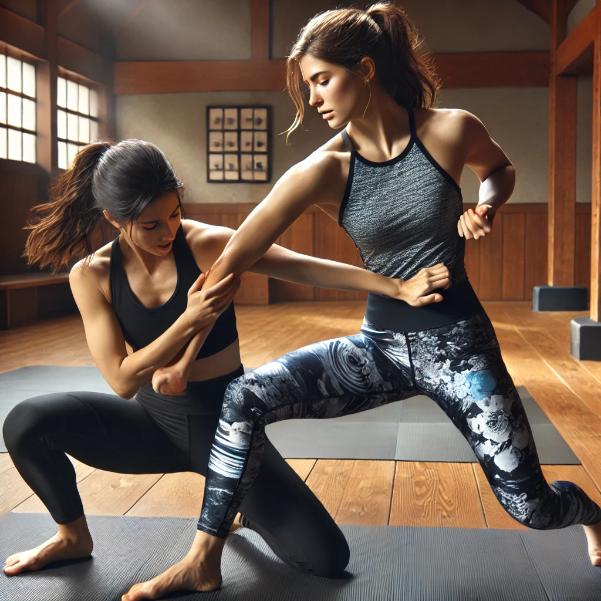

Nuestras disciplinas
Elige tu camino
Nihon Jujutsu

Arte marcial japonés orientado a la defensa personal, el control corporal y el desarrollo personal.
Nihon Jujutsu
El Nihon Jujutsu es un arte marcial tradicional japonés que combina defensa personal, preparación física y desarrollo personal.
El aprendizaje comienza desde los fundamentos. Se trabajan los desplazamientos, el equilibrio y las caídas para construir una base sólida y segura.
A medida que se avanza se estudian técnicas de proyección, control, luxación e inmovilización, así como diferentes situaciones de defensa personal.
La práctica desarrolla coordinación, fuerza, movilidad, autocontrol, disciplina y confianza.
No es necesario tener experiencia previa ni una condición física determinada. El entrenamiento se adapta progresivamente a cada practicante.
Técnica, control y superación.
Iaido
Arte marcial tradicional centrado en el manejo de la espada, la precisión y la concentración.
Iaido
El Iaido es una disciplina tradicional japonesa basada en el manejo preciso y consciente de la espada.
Durante la práctica se trabajan la postura, los desplazamientos, el desenvaine, los movimientos de corte y el enfunde.
Los kata permiten estudiar cada movimiento de forma progresiva, desarrollando precisión, coordinación, concentración y control corporal.
La práctica también fomenta disciplina, paciencia, serenidad, autocontrol y atención.
El aprendizaje se realiza de manera progresiva y segura, utilizando el material adecuado para cada nivel.
Precisión, concentración y serenidad.
Defensa Personal Policial

Formación especializada para profesionales de las Fuerzas y Cuerpos de Seguridad.
Defensa Personal Policial
Formación orientada a las necesidades específicas de profesionales de las Fuerzas y Cuerpos de Seguridad.
El entrenamiento puede incluir técnicas de intervención, control y engrilletamiento, así como trabajo de grappling y reducción.
También se estudia el uso profesional de herramientas como el bastón extensible y otros medios de intervención, siempre dentro del marco de la formación correspondiente.
El entrenamiento incorpora situaciones de presión, gestión del estrés y toma de decisiones para mejorar la respuesta ante escenarios profesionales.
La formación se adapta al nivel y necesidades de los participantes.
Control, intervención y preparación profesional.